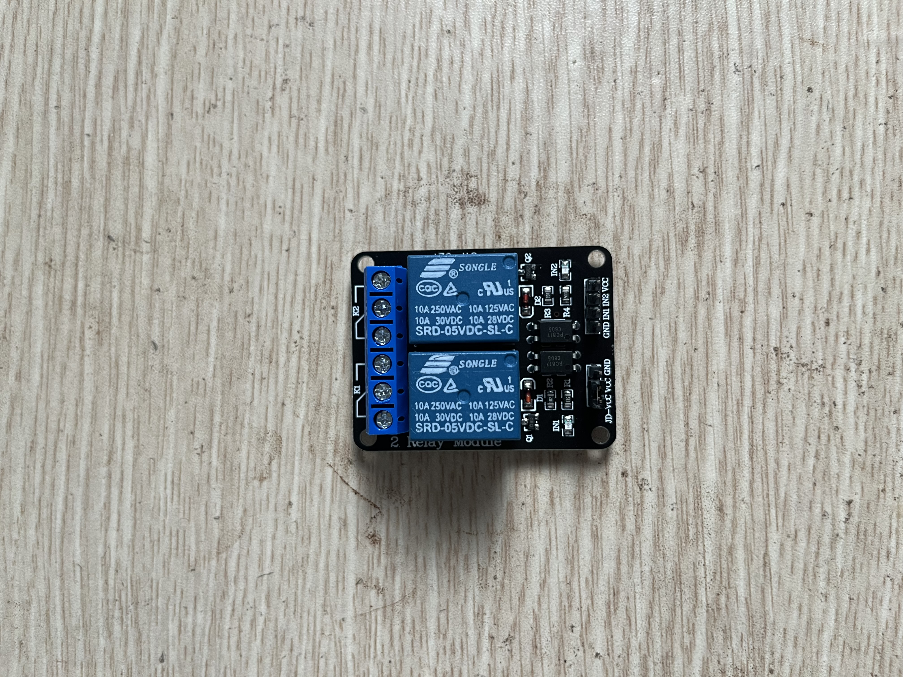

P14 Relay
ESP32 điều khiển module relay 2 kênh 5V để nghe tiếng đóng/ngắt và hiểu phần điều khiển tách với phần tải.
An toàn
Chỉ test tiếng relay và LED trên module. Không đấu điện lưới AC/220V vào cọc vít xanh. ESP32 GPIO là 3.3V logic; bài này dùng kiểu kéo LOW để kích relay, không drive HIGH vào input 5V.
Ảnh linh kiện



Nối dây
| Relay module | Landing | ESP32 rời | Vai trò |
|---|---|---|---|
| GND | e20 / a20 | GND | Mass chung |
| IN1 | e21 / a21 | D26 | Kênh relay 1 |
| IN2 | e22 / a22 | D27 | Kênh relay 2 |
| VCC | e23 / a23 | VIN/5V | Nguồn 5V module |
ESP32 GND ──đen──── a20 ═ e20 Relay GND
ESP32 D26 ──xanh─── a21 ═ e21 Relay IN1
ESP32 D27 ──tím──── a22 ═ e22 Relay IN2
ESP32 VIN/5V ──đỏ───── a23 ═ e23 Relay VCCBoard map
Chi tiết: boards/p14.md. ESP32 và relay đều rời breadboard; MB102 chỉ giữ các landing ở hàng 20–23.
Relay control header: GND e20 · IN1 e21 · IN2 e22 · VCC e23.
Các bước làm
- Reset breadboard trắng; ESP32 cắm USB và để ngoài breadboard.
- Không cắm gì vào cọc vít xanh
NO/COM/NC. - Giữ nguyên jumper cap nhỏ trên relay nếu nó đang nối
JD-VCCvàVCC. - Cắm relay header
GND IN1 IN2 VCClần lượt vềe20/e21/e22/e23. - Nối ESP32
GND/D26/D27/VINlần lượt vàoa20/a21/a22/a23. main.cppđang chọnp14_setup/p14_loop.pio run -t upload; relay sẽ lần lượt K1 “tạch”, nghỉ, K2 “tạch”, nghỉ.
Atomic trace
p14SetRelay(26, true)đặt D26 thànhOUTPUT LOW.- D26 kéo
IN1xuống GND qua dâya21/e21. - Module relay active-LOW kích kênh K1.
- Coil relay đóng tiếp điểm, bạn nghe tiếng “tạch”.
- Khi OFF, code đặt D26 về
INPUT; relay nhả ra.
Hoàn thành khi
- Relay K1 và K2 lần lượt đóng/ngắt ổn định.
- Serial Monitor 115200 in
relay 1 on,relay 2 on. - Bạn phân biệt được input điều khiển
IN1/IN2với cọc tiếp điểm tảiNO/COM/NC.